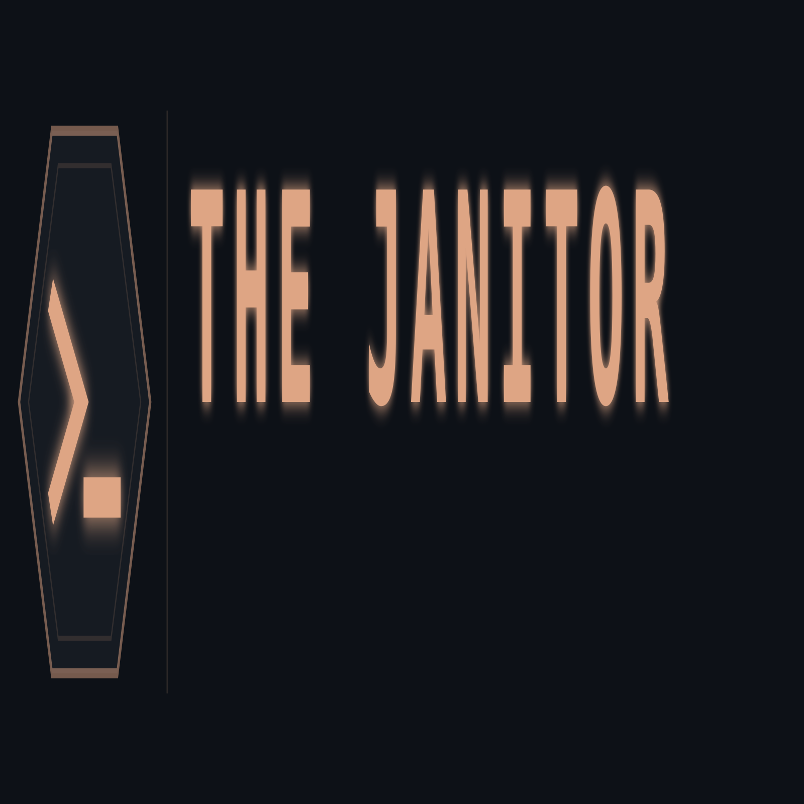

The Janitor
v6.11.0 — Rust-Native. Zero-Copy. Structural Enforcement at the Gate.
Sonar finds style violations. The Janitor enforces structural integrity.
82% of open Godot Engine pull requests contain no issue link. 20% introduce language antipatterns. Zero comment scanners caught it. The Janitor did — across 50 live PRs, in under 90 seconds.
THE CRISIS
The Veracode 2025 State of Software Security report established the baseline: AI-assisted code contains 36% more high-severity vulnerabilities than human-written equivalents. The 2026 addendum refined it further — remediation rates for AI-introduced flaws are declining, because human reviewers cannot process the volume.
Your engineers are merging Copilot output. Your linter passes it. Your SAST tool uploads it to a cloud pipeline and returns a report three minutes later. By then, the PR is merged.
The threat model has changed. Your enforcement layer has not.
THE ENFORCEMENT LAYER
The Janitor is not a linter. It is not a SAST scanner. It is a structural enforcement layer that runs on your hardware, in your pipeline, on every pull request — before the merge button is available.
Three capabilities your current toolchain cannot replicate:
Zero-Copy Execution
Every analysis — reference graph construction, dead symbol detection, structural clone hashing — executes via memory-mapped file access. Your source code is never copied to heap, never serialized, never transmitted. No network call is made at any point in the dead-symbol pipeline. The analysis surface is your local machine. There is no exfiltration vector to audit.
Benchmark: Scanned the Godot Engine — 3.5 million lines of polyglot C++, C#, Java, Objective-C++, and Python — in 33 seconds, consuming 58 MB of peak RAM. On a standard CI runner. With zero OOM events and zero panics.
Sonar's cloud pipeline cannot run in your air-gap. The Janitor runs everywhere.
Zombie Dependency Detection
AI code generators hallucinate package imports. A Copilot-generated function adds import requests at the module level and uses it exactly once — inside a conditional branch that never executes in production. Standard linters do not detect this. Import graphs do not resolve it. Dependency reviewers do not see it.
The Janitor scans package.json, Cargo.toml, requirements.txt, spin.toml (Fermyon WASM), and wrangler.toml (Cloudflare Workers) against the live symbol reference graph. A package that appears in your manifest but never appears in a reachable import path is a zombie dependency — declared, installed, and billing you in attack surface.
Every PR that introduces a zombie dependency is flagged before merge.
Cryptographic Integrity Bonds
When a pull request clears the slop gate, Janitor Sentinel — our GitHub App — automatically issues a CycloneDX v1.5 CBOM (Cryptography Bill of Materials) for the merge event. The CBOM records every cryptographic operation performed during the scan: the ML-DSA-65 (NIST FIPS 204) attestation signature, the BLAKE3 structural hashes, and the per-symbol audit entries covering {timestamp}{file_path}{sha256_pre_cleanup}.
No token flag. No manual step. The proof is issued by the SaaS on a clean merge — a chain of custody presentable to a SOC 2 auditor, a regulator, or an incident response team. Not a log. A bond.
Zero-Friction GitHub Integration

Janitor Sentinel automatically downgrades vetoes when it detects safe patterns (e.g., Dependabot).
THE PR GATE: LIVE RESULTS
The janitor bounce command intercepts pull requests at the diff level and scores them across four dimensions:
| Signal | Weight | What It Catches |
|---|---|---|
| Dead symbols introduced | ×10 | Functions with no call sites entering the codebase |
| Logic clones detected | ×5 | Structurally identical implementations under different names |
| Zombie symbols reintroduced | ×15 | Previously-deleted symbols returning via AI-assisted copy-paste |
| Language antipatterns | ×50 | Hallucinated imports, vacuous unsafe blocks, goroutine closure traps |
Social Forensics runs on top: every added comment line is scanned for AI-ism phrases ("Note that", "It's worth mentioning", "As an AI") and corporate-speak markers via a zero-allocation AhoCorasick automaton. PR bodies are scanned for issue link compliance (Closes #N, Fixes #N).
Live Godot Engine audit — 50 open PRs, February 2026:
PRs analyzed : 50
Unlinked PRs : 41 (82% — no Closes/Fixes #N)
Antipatterns flagged : 10
AI comment violations : 0 (Godot contributors are clean)
Logic clones : 2 PRs
Highest slop score : 70 (PR #116833 — TitanNano)
These are real, open, unmerged pull requests against a 3.5M LOC production codebase. The gate works.
THE TECHNICAL STACK
The Anatomist
Parses via zero-copy Tree-sitter CSTs across 12 grammars: C, C++, Rust, Go, Java, C#, JavaScript, TypeScript, Python, GLSL, Objective-C, Bash. Extracts every function, class, and top-level symbol as a zero-copy Entity with byte ranges, qualified names, decorator lists, and structural hashes. Builds a directed reference graph resolving imports, attribute calls, and language-specific linkage.
The 6-Stage Dead Symbol Pipeline
| Stage | Filter | Guard |
|---|---|---|
| 0 | Directory exclusion (tests/, migrations/, venv/) |
Protection::Directory |
| 1 | Reference graph: in-degree > 0 | Protection::Referenced |
| 2+4 | Heuristic wisdom + __all__ exports |
Various |
| 3 | Library mode: all public symbols protected | Protection::LibraryMode |
| 5 | Aho-Corasick scan of non-.py files |
Protection::GrepShield |
Anything that survives all five gates is a confirmed dead symbol. No false positives from GDCLASS registration macros, function pointer dispatch, or runtime-registered plugins.
The Forge
BLAKE3 structural hashing with alpha-normalization detects logic clones — functions with identical structure and different names. Chemotaxis ordering prioritizes high-calorie files (.rs, .py, .go, .ts) in the analysis pass. The slop_hunter detects language-specific antipatterns via Tree-sitter AST walks: hallucinated Python imports, vacuous Rust unsafe blocks, goroutine closure traps.
The Reaper
Surgical byte-range deletion. Sorted bottom-to-top by start_byte to preserve upstream offsets. UTF-8 hardened via str::is_char_boundary(). Atomic backup to .janitor/ghost/ before first write. Rollback via janitor undo restores exact pre-deletion state.
The Daemon
A long-lived Unix Domain Socket server keeps the symbol registry memory-resident across CI requests. Eliminates process-spawn overhead for high-frequency pipelines. The Physarum Protocol — named for Physarum polycephalum, slime mould that modulates nutrient flow under environmental pressure — governs backpressure: RAM ≤ 75% = full throughput; 75–90% = throttle to 2 concurrent analyses; > 90% = hold and retry.
Data Sovereignty
All operations run locally. Your source code is memory-mapped on your hardware and never transmitted. The signed attestation token is verified by a 32-byte public key embedded in the binary. No telemetry. No cloud dependency. No exfiltration surface.
ECONOMICS
The enforcement is free. The attestation is the product.
| Tier | Cost | What You Get |
|---|---|---|
| Free | $0 | Unlimited scan, clean, dedup, bounce, dashboard, report. No signed logs. |
| Team | $499/yr | All free features + ML-DSA-65 Integrity Bonds + CycloneDX v1.5 CBOMs + CI/CD Compliance Attestation + Janitor Sentinel GitHub App. Up to 25 seats. |
| Industrial | Custom | On-Premises Token Server + Keypair Rotation Protocol + SOC 2 Audit Support + Enterprise SLA. Unlimited seats. |
The cleanup is identical at every tier. What you are paying for is a cryptographically verifiable chain of custody that satisfies a regulator, an auditor, or an incident response team.
Activate Attestation → thejanitor.lemonsqueezy.com
INSTALLATION
From source (Rust 1.82+, just required):
git clone https://github.com/GhrammR/the-janitor
cd the-janitor
just build
# Binary: target/release/janitor
Pre-built binary:
COMMANDS
# Structural dead symbol audit
janitor scan <path> [--library] [--format json]
# PR enforcement gate — score a diff against the registry
janitor bounce <path> --patch <file> --pr-number <n> --author <handle> --pr-body "$BODY" --format json
# Zombie dependency detection across npm / cargo / pip / spin / wrangler
janitor scan <path> --format json # zombie_deps in output
# Structural clone detection
janitor dedup <path>
# Safe Proxy deduplication (explicit flag required)
janitor dedup <path> --apply --force-purge
# Shadow-simulate deletion → test suite → physical removal
janitor clean <path> --force-purge
# Generate historical slop / clone / zombie intelligence report
janitor report [--repo <path>] [--top <n>] [--format markdown|json]
# Long-lived daemon for low-latency CI (Unix socket, Physarum backpressure)
janitor serve [--socket <path>] [--registry <file>]
# Ratatui TUI dashboard
janitor dashboard <path>
THE PROOF
3.5 million lines. 33 seconds. 58 megabytes. Zero panics.
See Security Posture for the Shadow Tree isolation, atomic rollback protocol, and hermetic build details. See Pricing & Licensing for BUSL-1.1 terms and commercial tier details. See Terms of Service · Privacy Policy for legal and data handling.